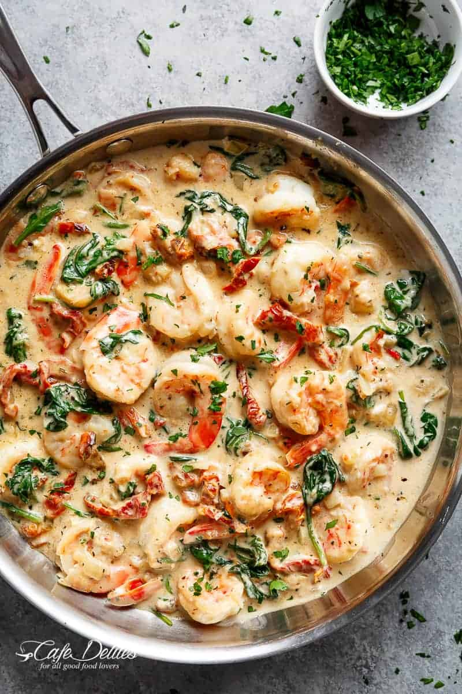

|

|
- 2 tablespoons of salted butter
- 6 cloves garlic, finely diced
- 1 pound (500 g) shrimp (or prawns), tails on or off
- 1 small yellow onion, diced
- 1/2 cup white wine (OPTIONAL)
- 5 oz (150 g) jarred sun dried tomato strips in oil, drained (reserve 1 teaspoon of the jarred oil for cooking)
- 1 3/4 cups half and half SEE NOTES
- Salt and pepper, to taste
- 3 cups baby spinach leaves, washed
- 2/3 cup fresh grated Parmesan cheese
- 1 teaspoon cornstarch (cornflour) mixed with 1 tablespoons of water (optional)
- 2 teaspoons dried Italian herbs
- 1 tablespoon fresh parsley, chopped
|